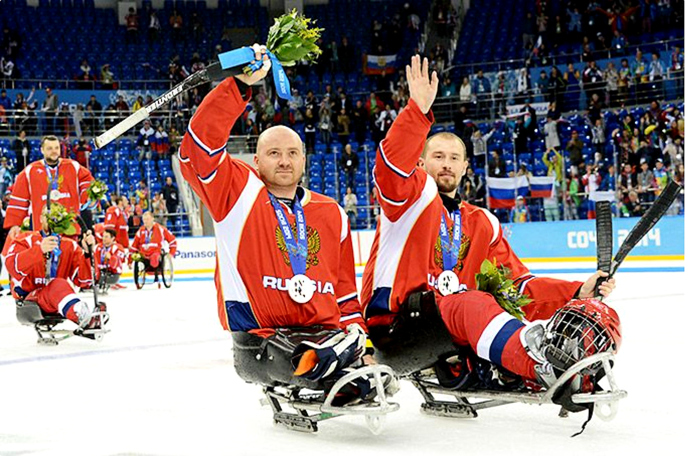
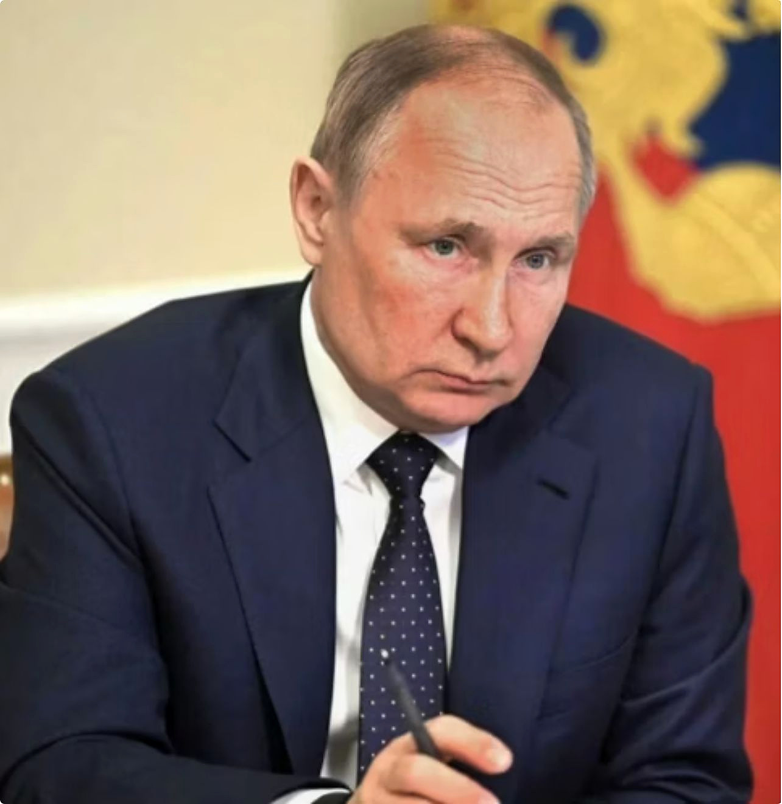
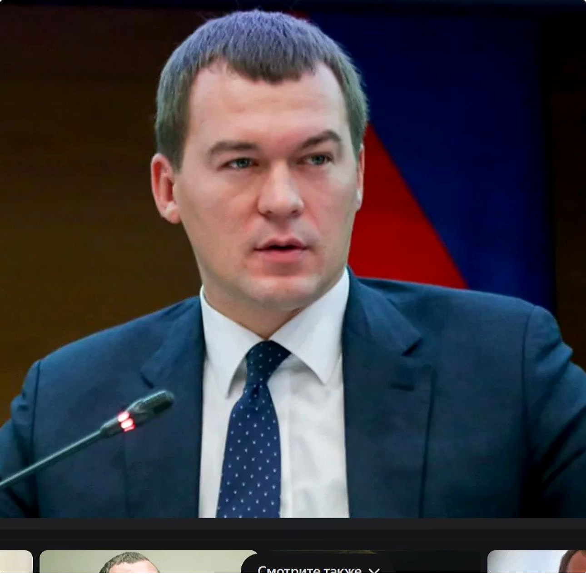
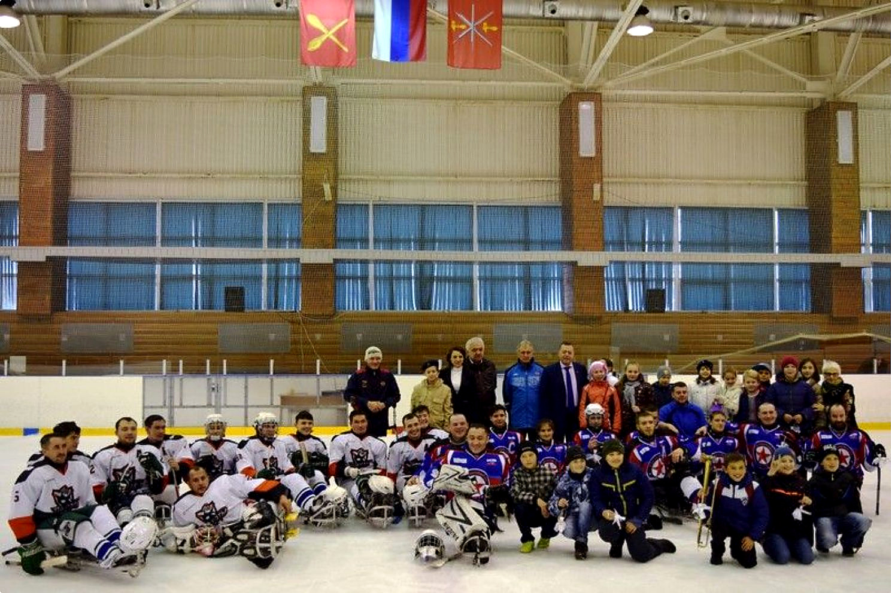
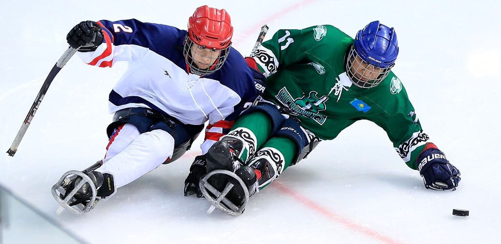

МОСКВА · СЛЕДЖ-ХОККЕЙ
РАЗВИТИЕ
СЛЕДЖ-ХОККЕЯ
В МОСКВЕ
ДО 2036 ГОДА
СИЛА ДУХА. КОМАНДА. ПОБЕДЫ.

“
«Вижу огромную ценность в развитии адаптивного спорта, вовлечении в него всё большего числа людей с ограниченными возможностями здоровья».В.В. Путин Президент Российской Федерации
ГОСУДАРСТВЕННАЯ ПОДДЕРЖКА
«Развитие следж-хоккея - это про людей, силу характера и равные возможности».М.В. Дегтярёв


МИССИЯ
Следж-хоккей -
это сила духа,
команда
и настоящие победы
и социализация
и талантов
на всех уровнях
ЦЕЛИ И ЗАДАЧИ
◎
ЦЕЛЬ
Создать сильную систему следж-хоккея в Москве и вывести сборную города на лидирующие позиции в России и мире к 2036 году.
☷
ЗАДАЧИ
- Развитие массовости и доступности
- Подготовка спортсменов и тренеров
- Создание инфраструктуры
- Проведение соревнований и мероприятий
- Межведомственное и международное сотрудничество
ПЛАН-ГРАФИК РАЗВИТИЯ 2025-2028
и социализация
спортсменов
и экипировка
и мероприятия
и партнёрства
центр
и специалистов
Москвы
Москвы
и база
следж-хоккея
сотрудничество
ПЛАН-ГРАФИК 2025-2028
1. Системные программы
НАПРАВЛЕНИЕ2025202620272028
Реабилитация и социализация
Поиск и отбор спортсменов
Оборудование и экипировка
Соревнования и мероприятия
Сотрудничество и партнёрства
ПЛАН-ГРАФИК 2025-2028
2. Инфраструктура и развитие системы
НАПРАВЛЕНИЕ2025202620272028
Научно-методический центр
Повышение квалификации специалистов
Клубы и регулярные тренировки
Учебно-тренировочная база
Фонд развития следж-хоккея
Международное сотрудничество

КЛЮЧЕВЫЕ СПОРТИВНЫЕ СОБЫТИЯ
- ▣Товарищеские матчи Москва - Санкт-Петербург
- ▣Открытый городской турнир «Кубок Москвы»
- ♜Первенство Москвы по следж-хоккею
- ♟Всероссийские соревнования и этапы Кубка России
- ♟Международные матчи и фестивали
МОСКВА - ГОРОД ВОЗМОЖНОСТЕЙ
♙
Массовость
Расширение возможностей заниматься адаптивным спортом.
▥
Сильная система
Подготовка спортсменов, тренеров и специалистов.
♜
Победы
Москва на российских и международных турнирах.
♡
Инклюзивность
Общество, где ценят силу духа и команду.

ВМЕСТЕ МЫ СОЗДАЁМ
БУДУЩЕЕ СЛЕДЖ-ХОККЕЯ
МОСКВЫ!
СИЛА ДУХА. КОМАНДА. ПОБЕДЫ.
КОНТАКТЫ
▣ Департамент спорта города Москвы
✉ sport@mos.ru
◉ www.mos.ru/sport
ВРЕМЯ ПОБЕЖДАТЬ ВМЕСТЕ!
МОСКВА
СЛЕДЖ-ХОККЕЙ
2036
СИЛА ДУХА. КОМАНДА. ПОБЕДЫ.